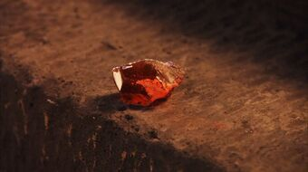

<!DOCTYPE html>
<html>
    <head>
        <meta charset="utf-8">
        <title>PotterScience</title>
        <meta name="description" content="PotterScience">
        <link rel="stylesheet" href="styles.css">
        <link rel="icon" href="star-white.jpg">
    </head>
</html>

<body>
    <div class="topnav">
        <a href="index.html"><br>Home</a>
        <a class="active" href="facts.html"></a>
        <a href="RantRoom.html"><br>RantRoom</a>
        <a href="Hogsmeade.html"><br>Hogsmeade</a>
      </div>

      <h1 class="Heading1">The Alchemist of Elixir of Life</h1><br>
      
      <p class="pb">I know, this is rather historical again than scientifical. But unlike the Merlin's fact that is filled with only history. Flamel's facts are recorded both scientifically and historically.
        Because by broaching about Nicolas Flamel, we will also come to the topic of the Philosopher's Stone and the Elixir of Life. Which in fact, is literally scientific. However, to minimize our incantation- we'll be talking about the Elixir of Life in the next block.
        Nicolas Flamel, did not showed up in the books nor movies of The Harry Potter series, but they do talked about him as a good friend of Dumbledore. Flamel was known to be around 655 years old when Dumbledore story taled.
        If Dumbledore is The Greatest Wizard, then Flamel is The Greatest Alchemist. In spite of that, Nicolas Flamel first came to the big screens in Fantastic Beasts: Crime of Grindelwald with Newt Scamander's series. 
        From Rowling's world herself, it is acknowledge that Nicolas Flamel is the only real living person Rowling put into her series. So, other than being a fictious (or not) character like Merlin, Flamel's record of living in the same air like us is accurate.
        He was also famous in our world as the person who disappeared with the Elixir of Life. Which is chaotic, btw. Accordingly, Nicolas Flamel 
</p>
<br>


<br>
<br><br><BR><BR><BR><BR><BR><BR><BR><BR><BR>
<footer class="footer">
    <p>Contact us; 
    <a href="mailto:jahypotenuse@gmail.com">jahypotenuse@gmail.com</a>&
    <a href="mailto:gillparker321@gmail.com">gillparker321@gmail.com</a></p>
  </footer> 
</body>